- Artificial Intelligence is the ability of a machine to perceive an environment and choose actions that maximize the likelihood of achieving a goal
Azure AI Fundamentals Study Guide
Condensed exam notes — machine learning, computer vision, NLP, conversational AI and more. Use the sidebar or press / to search.
AI Fundamentals›
Artificial Intelligence Workloads
- Prediction / Forecasting
- Anomaly Detection
- Computer Vision (both images and videos)
- Natural Language Processing (both written and spoken language)
- Conversational AI
- Other (Decision Support / Knowledge Mining)
- Prediction vs Forecasting:
A forecast refers to a calculation or an estimation which uses data from previous events, combined with recent trends to come up a future event outcome. Forecasting uses mathematical formulas and as a result, they are free from personal as well as intuition bias
On the other hand, a prediction is an actual act of indicating that something will happen in the future with or without prior information.
In short, all forecasts are predictions but not all predictions are forecasts. Anyone can do a prediction since it does not require any special skills but for one to do forecasting he/she requires special skills.
Guiding Principles for Responsible AI
- Fairness
- Inclusiveness
- Reliability and Safety
- Privacy and Security
- Transparency
- Accountability
Fairness: AI systems should treat all people fairly without incorporating any bias based on gender, ethnicity, or other factors that might result in an unfair advantage or disadvantage to specific groups of applicants.
Inclusiveness: AI should bring benefits to all parts of society, regardless of physical ability, gender, sexual orientation, ethnicity, or other factors.
Note difference with fairness…fairness is more to do with not being fair against a certain segment of users i.e. the segment was part of the training but there is a situation of implicit bias which causes the inferencing to be unfair. Inclusiveness also implies not being able to provide a fair outcome but in this case there is no bias…certain segments are flat out not included for consideration. Example…Asian accents during voice recognition training or leaving out visually impaired and deaf or hard of hearing
Reliability and Safety: AI systems should operate reliably, safely, and consistently. Ensure that AI systems operate as they were originally designed, respond to unanticipated conditions and resist harmful manipulations.
Privacy and Security: AI systems should be secure and respect privacy.
Transparency: It is critical that people understand how AI system has made decisions. Users should be made fully aware of the purpose of the system, how it works, and what limitations may be expected.
Accountability: People should be accountable for AI systems. Designers and developers of AI-based solution should work within a framework of governance and organizational principles that ensure the solution meets ethical and legal standards that are clearly defined
- Azure AI Offerings
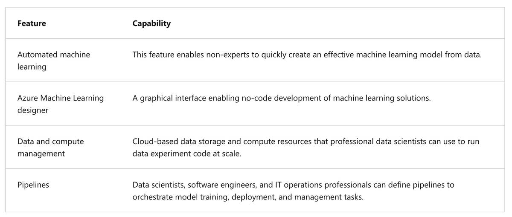
- Rule Based vs Machine Learning bases Models: Rules are static and might be a good choice when dataset is small – Deep domain expertise is needed to come up with the rules. ML Rules are dynamic…i.e. get altered based on the data. Data combined with the appropriate ML model/algorithm selection determines the outcome.
- Machine Learning Super High level types:
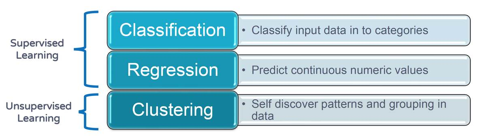
- Regression: Regression is a form of machine learning that is used to predict a numeric label based on an item's features
- Get Started on Azure: Create Machine Learning workspace → Apart from basic info these 4 resources need to be created (Storage Account + Key Vault + App Insights + Container Registry) → then launch ML Studio → Create Compute Clusters
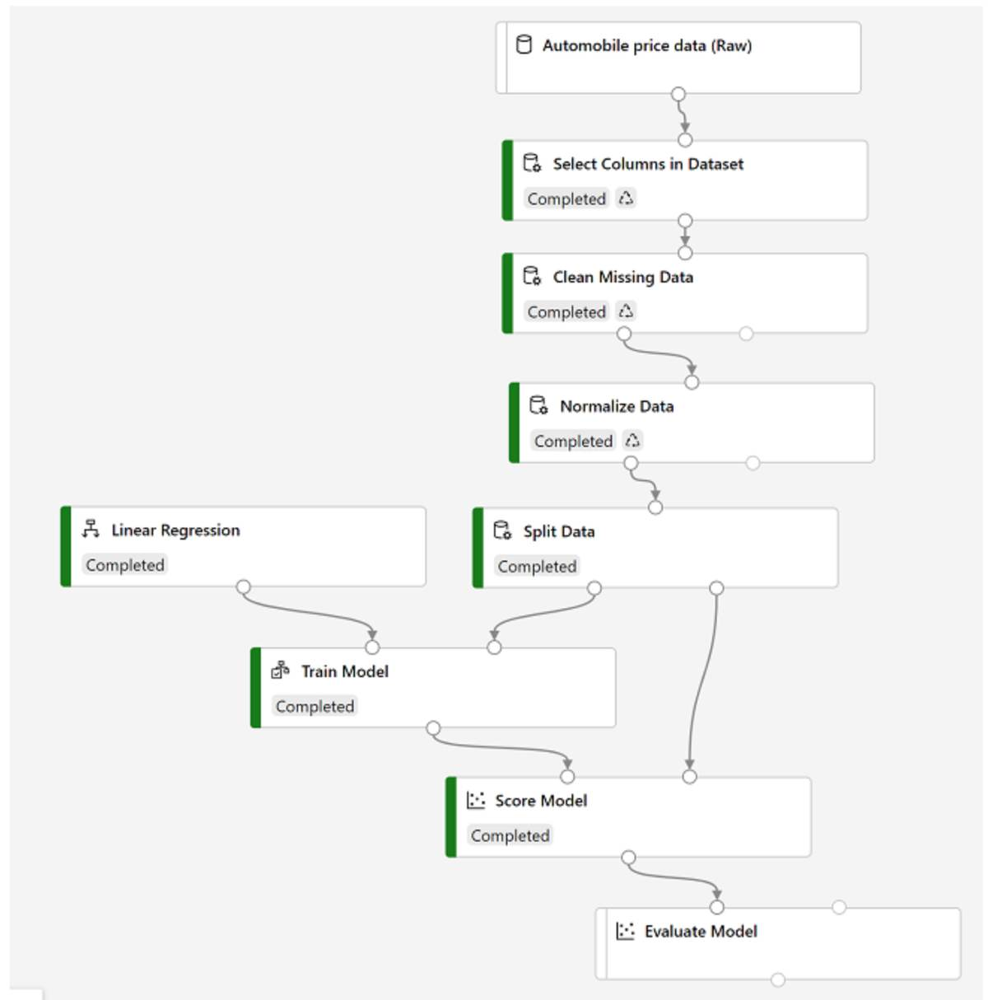
- Last 2 steps in the sequence are scoring and evaluating the model. Scoring is essentially viewing the results. Evaluating is deeper analysis of the results / fit
Few Regression Performance metrices:
- Mean Absolute Error (MAE): the absolute difference between actual and predicted values. Lower the value the better
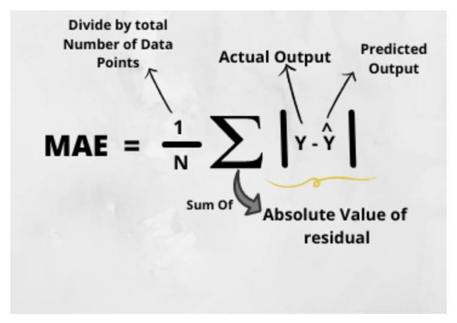
Mean Squared Error (MSE): Same but use the squares so this can be used as a loss function i.e. cases in which predictions are negative and can skew
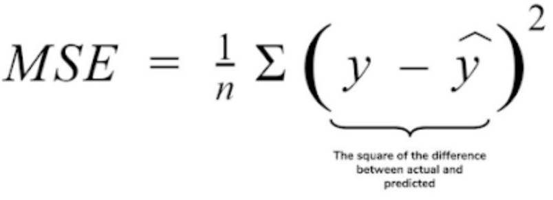
Root Mean Squared Error (RMSE): simple squared root of above to have same / smaller units as original
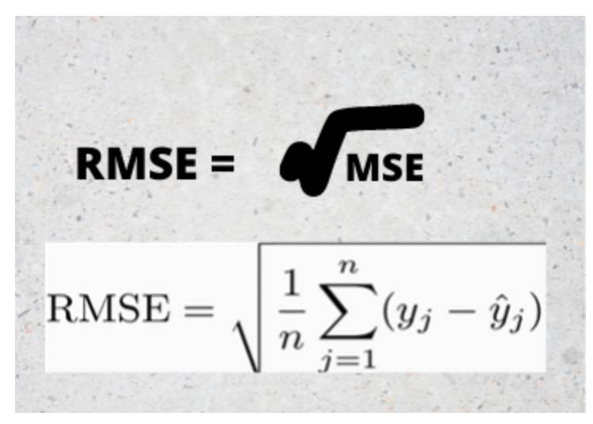
Root Mean Squaerd Log Error Error (RMSLE)
Coefficient of Determination (R2)
- Classification: refers to a predictive modeling problem where a class label is predicted for a given example of input data. The input data can be both structured and unstructured
Types of Classification:
- Binary Classification
- Multi-Class Classification
- Multi-Label Classification (same as prev but multiple labels detected in same input – say taxi and a building from a single pic)
- Imbalanced Classification
Confusion Matrix is a performance measurement for the machine learning classification problems where the output can be two or more classes.
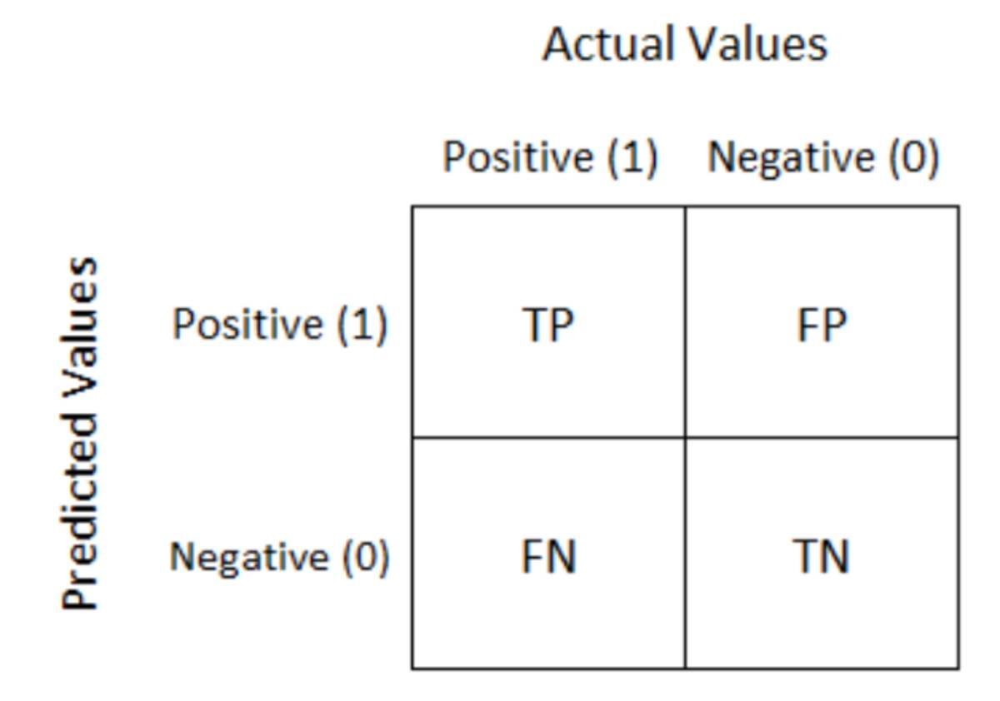
Related→ Sensitivity vs Specificity
- Sensitivity is the ability of a test to correctly identify those patients with the disease.
- Specificity is the ability of a clinical test to correctly identify those patients without the disease.
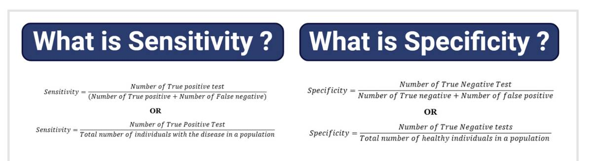
Classification Evaluation Metrics:
- Accuracy + Precision + Recall:
Accuracy: Accuracy simply measures how often the classifier correctly predicts. We can define accuracy as the ratio of the number of correct predictions and the total number of predictions.
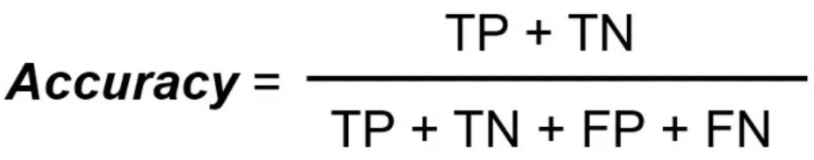
Accuracy, by itself is helpful where the classes are balanced but can be misleading in cases where classes are imbalanced. i.e. if training contains 99% dog images and 1% cat images then given test data with primarily dog pic accuracy will be great but still the model will fail for all cats. Or another example of asteroid hitting the earth will 99.X% of the time be negative and accurate but might miss the actual times that it does happen…so here the model is still highly accurate but lacks precision.
Another example is detecting fraudulent transactions. The system may have 99.99% accuracy but the one transaction that was missed might cost millions of dollars
Precision: Precision explains how many of the correctly predicted cases actually turned out to be positive. Precision is useful in the cases where False Positive is a higher concern than False Negatives
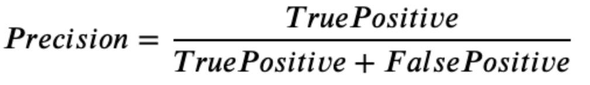
Basically use when you want to be very sure of the prediction look at precision. Say you are using ML to predict who to give PPE loans for a bunch of apps, you should give only to those who would qualify and not even one of the other (non qualifiables)
Recall (Sensitivity): Recall explains how many of the actual positive cases we were able to predict correctly with our model. It is a useful metric in cases where False Negative is of higher concern than False Positive
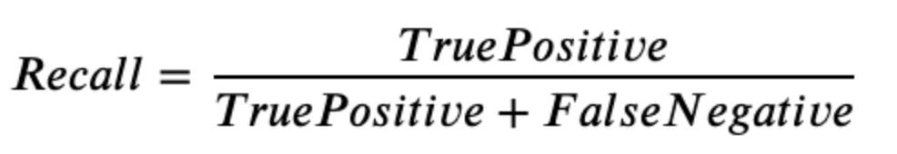
Example detecting cancer, it is ok if we have some false positives (will be retested don’t sweat) but there should be no false negatives i.e. has cancer but undetected
- F1 Score: It gives a combined idea about Precision and Recall metrics. It is maximum when Precision is equal to Recall.
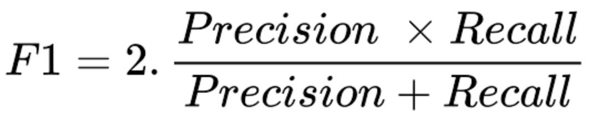
If you are a cop and you want to catch criminals, you want to be sure that the person you catch is a criminal (Precision) and you also want to capture as many criminals (Recall) as possible. The F1 score manages this tradeoff.
Log Loss or Cross Entropy Loss
AUC
- Clustering: Clustering is a form of machine learning that is used to group similar items into clusters based on their features.
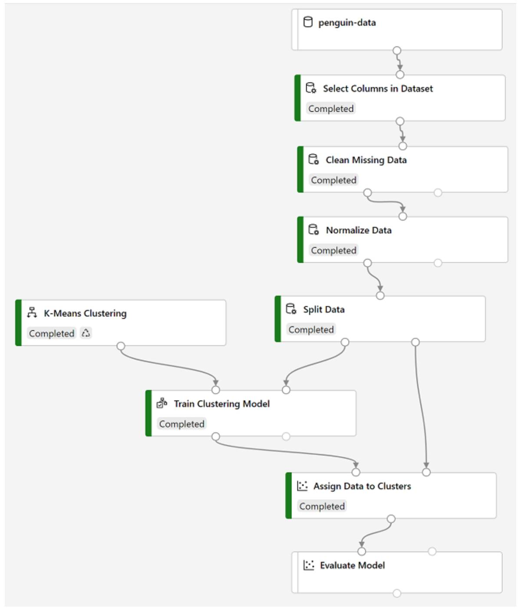
- Clustering Performance Metrices:
Average Distance to Other Center: This indicates how close, on average, each point in the cluster is to the centroids of all other clusters.
Average Distance to Cluster Center: This indicates how close, on average, each point in the cluster is to the centroid of the cluster.
Number of Points: The number of points assigned to the cluster.
Maximal Distance to Cluster Center: The maximum of the distances between each point and the centroid of that point’s cluster. If this number is high, the cluster may be widely dispersed. This statistic in combination with the Average Distance to Cluster Center helps you determine the cluster’s spread.
- Anomaly Detection: a machine learning based technique that analyzes data over time (i.e. time series data) and identifies unusual changes.
Example: Credit Card fraud detection, telemetry from airplane engines (airplanes as a whole), race cars, or pretty much anything that can send telemetry
- Features (inputs to training and inferencing) and Labels (what is being predicted)
- Feature Engineering (making up new columns, splitting, etc) and Feature Selection
- Training vs Testing vs Validation Datasets
- Azure Automated Machine Learning: Feed dataset and Azure finds which is the best ML model to utilize (only can do Classification, Regression and Time Series)
- Azure Cognitive Service vs Azure Machine Learning Service (Studio): Cognitive Service is more off the shelf usage – ML Service / Studio you build / train
- Note: Deploying inference pipelines to Azure Container Instance (ACI) is useful for development and testing. For production, you should create an inference cluster, which provide an Azure Kubernetes Service (AKS) cluster that provides better scalability and security.
- Azure AI Algorithms Cheat Sheet: https://docs.microsoft.com/en-us/azure/machine-learning/algorithm-cheat-sheet
Computer Vision›
- Computer Vision Solutions based on ML Models
- Image Classification and Image Analysis
- Object Detection and Object Tracking
- Sematic Segmentation
- Face Detection, Analysis and Recognition
- Optical Character Recognition (OCR)
- Azure Vision Offerings
- Computer Vision: Analyze images and videos and extract descriptions, tags, objects and text
- Custom Vision: Train custom image classification and object detection models using your own images
- Face Service: Build face detection and facial analysis solutions
- Form Recognizer: Extract information from scanned forms and invoices
- Optical Character Recognition: hand written / not digital
Computer Vision: The Computer Vision service is a cognitive service in Microsoft Azure that provides pre-built computer vision capabilities. The service can analyze images, and return detailed information about an image and the objects it depicts.
Computer Vision service is bundled within Azure Cognitive Service umbrella. Use cognitive if using bunch of other services…mainly for administrative purposes
After Image Analysis the descriptive elements that the model spits out is called ‘tags’. With object detection you also get positional information i.e. bounding box with the resulting tags – these are (top, left, width and height).
Additionally, Computer Vision service can also perform Detecting Brands, Detecting Faces, Categorizing an Image, Detecting Domain Specific Content, OCT, detect images types, detect image color schemes, generate thumbnails and moderate content (detecting adult content or depict violent / gory scenes)
Custom Vision: Only two models supported here are Image Classification and Object Detection
Image classification: is a common workload in artificial intelligence (AI) applications. It harnesses the predictive power of machine learning to enable AI systems to identify real-world items based on images. Similar to non-image datasets To create an image classification model, you need data that consists of features and their labels.
Most modern image classification solutions are based on deep learning techniques that make use of convolutional neural networks (CNNs) to uncover patterns in the pixels that correspond to particular classes.
Common techniques used to train image classification models have been encapsulated into the Custom Vision cognitive service in Microsoft Azure; making it easy to train a model and publish it as a software service with minimal knowledge of deep learning techniques.
Training is standard…i.e. multiple images + tagging/ labelling them and giving to the model. To use a published model, you need the project ID, the model name, and the key and endpoint for the prediction resource.
- Performance Benchmarks for Custom Vision / Image Classification:
Precision: What percentage of the class predictions made by the model were correct? For example, if the model predicted that 10 images are oranges, of which eight were actually oranges, then the precision is 0.8 (80%).
Recall: What percentage of class predictions did the model correctly identify? For example, if there are 10 images of apples, and the model found 7 of them, then the recall is 0.7 (70%).
Average Precision (AP): An overall metric that takes into account both precision and recall).
Some potential uses: Product Identification + Disaster Investigation + Medical Diagnosis
Object Detection: Identify object + location – in essence extends Image Classification
Steps for training, performance metrices and inferencing are the same as Image Classification
- With Custom Vision Service, 2 resources are created when doing training and prediction…if you use cognitive just a single service is created.
Face Service: Face Detection + Face Analysis + Facial Recognition – specialized for faces. Microsoft also offers facial services as part of Computer Vision and Video Indexer (analyze faces in videos) but specialized service is the Face Service
Face currently supports the following functionality:
Face Detection
Face Verification
Find Similar Faces
Group faces based on similarities
Identify people
Can also detect other attributes like:
Age: a guess at an age
Blur: how blurred the face is (which can be an indication of how likely the face is to be the main focus of the image)
Emotion: what emotion is displayed
Exposure: aspects such as underexposed or over exposed and applies to the face in the image and not the overall image exposure
Facial hair: the estimated facial hair presence
Glasses: if the person is wearing glasses
Hair: the hair type and hair color
Head pose: the face's orientation in a 3D space
Makeup: whether the face in the image has makeup applied
Noise: refers to visual noise in the image. If you have taken a photo with a high ISO setting for darker settings, you would notice this noise in the image. The image looks grainy or full of tiny dots that make the image less clear
Occlusion: determines if there may be objects blocking the face in the image
Smile: whether the person in the image is smiling
Some considerations for facial analysis:
image format - supported images are JPEG, PNG, GIF, and BMP
file size - 6 MB or smaller
face size range - from 36 x 36 up to 4096 x 4096. Smaller or larger faces will not be detected
other issues - face detection can be impaired by extreme face angles, occlusion (objects blocking the face such as sunglasses or a hand)
Form Recognizer: The Form Recognizer in Azure provides intelligent form processing capabilities that you can use to automate the processing of data in documents such as forms, invoices, and receipts. It combines state-of-the-art optical character recognition (OCR) with predictive models that can interpret form data by:
Matching field names to values.
Processing tables of data.
Identifying specific types of field, such as dates, telephone numbers, addresses, totals, and others.
- Form Recognizer supports automated document processing through:
A pre-built receipt model that is provided out-of-the-box, and is trained to recognize and extract data from sales receipts.
Custom models, which enable you to extract what are known as key/value pairs and table data from forms. Custom models are trained using your own data, which helps to tailor this model to your specific forms. Starting with only five samples of your forms, you can train the custom model
Similar to Computer Vision / Custom Vision services can be created as a separate service or under Azure Cognitive Services. And service can be accessed using a key and endpoint pair.
Pre-built models can currently do only English. If you want other languages, you need to do Custom. Some additional constraints –
Images must be JPEG, PNG, BMP, PDF, or TIFF formats
File size must be less than 50 MB
Image size between 50 x 50 pixels and 10000 x 10000 pixels
For PDF documents, no larger than 17 inches x 17 inches
- Form Recognizer vs OCR: OCR is specific to just reading the text from handwritten or forms without any semantic context – Form Recognizer is a more specialized feature where you can additionally gather context, read tables, data type formats, etc
Optical Character Recognition (OCR): OCR helps to read printed and handwritten text from digitized notes, forms and photographs.
Should add that OCR is a discipline where the areas of Computer Vision and NLP would intersect.
Some major areas where OCR is utilized –
Note taking
Digitizing forms, such as medical records or historical documents
Scanning printed or handwritten checks for bank deposits
- The Computer Vision service provides two application programming interfaces (APIs) that you can use to read text in images:
OCR API (for smaller workloads / not too much text)
Read API (larger workloads)
- Mgmt Console Screen Shot / All / Cognitive Services
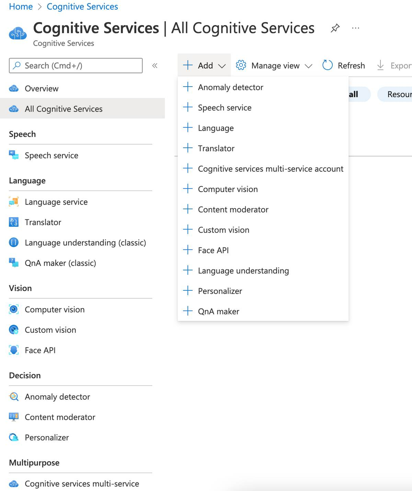
Natural Language Processing›
- Natural language processing strives to build machines that understand and respond to text or voice data—and respond with text or speech of their own—in much the same way humans do
- Common NLP Features
- Key Phrase Extraction [TEXT]
- Entity Recognition [TEXT]
- Sentiment Analysis [TEXT]
- Language Detection [TEXT]
- Language Modeling [TEXT]
- Speech Recognition and Synthesis [SPEECH ←→ TEXT]
- Translation [TEXT && SPEECH]
- Azure Services that provide above
- Language Service
- Key Phrase Extraction
- Entity Recognition
- Sentiment Analysis
- Language Detection
- Language Modeling
- Speech Service
- Speech Recognition and Synthesis
- Translation
- Translator Text Service
- Text Translation
- NLP Features / Azure Services
Language Service
Key Phrase Extraction: Key phrase extraction is the concept of evaluating the text of a document, or documents, and then identifying the main talking points of the document(s).
Entity Recognition: Detect entities in a text…Entities of interest would be Person, Location, Organization, Quantity, DateTime, URL, Email, US-based phone, IP Address, etc. Service supports entity linking to a specific reference (say a Wikipedia link)
Sentiment Analysis: Detect Sentiment: Key phrase extraction is the concept of evaluating the text of a document, or documents, and then identifying the main talking points of the document(s).
Language Detection
Spits out
- The language name (for example "English").
- The ISO 6391 language code (for example, "en").
- A score indicating a level of confidence in the language detection.
If the sentence contains a mix of languages, then the predominant language is chosen, the confidence might go low based on this. In case not able to detect then unknown is returned w/ a score of NaN.
Language Modeling / Conversation Language Understanding: This relates to understanding the context – semantics than just the words. Three core concepts need to be taken into account for this...
- Utterances: something the user might say
- Entities: an item that the utterance refers to i.e. the entity
- Intents: the goal
To create an application with Conversational Language Understanding you need to
- Author the model (define utterances, entities and intents)
- Publish model for Entity prediction
Defining entities:
- Machine-Learned: Entities that are learned by your model during training from context in the sample utterances you provide.
- List: Entities that are defined as a hierarchy of lists and sublists. For example, a device list might include sublists for light and fan. For each list entry, you can specify synonyms, such as lamp for light.
- RegEx: Entities that are defined as a regular expression that describes a pattern - for example, you might define a pattern like [0-9]{3}-[0-9]{3}-[0-9]{4} for telephone numbers of the form 555-123-4567.
- Pattern.any: Entities that are used with patterns to define complex entities that may be hard to extract from sample utterances.
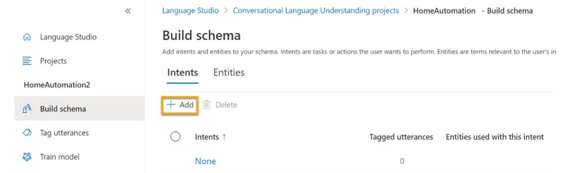
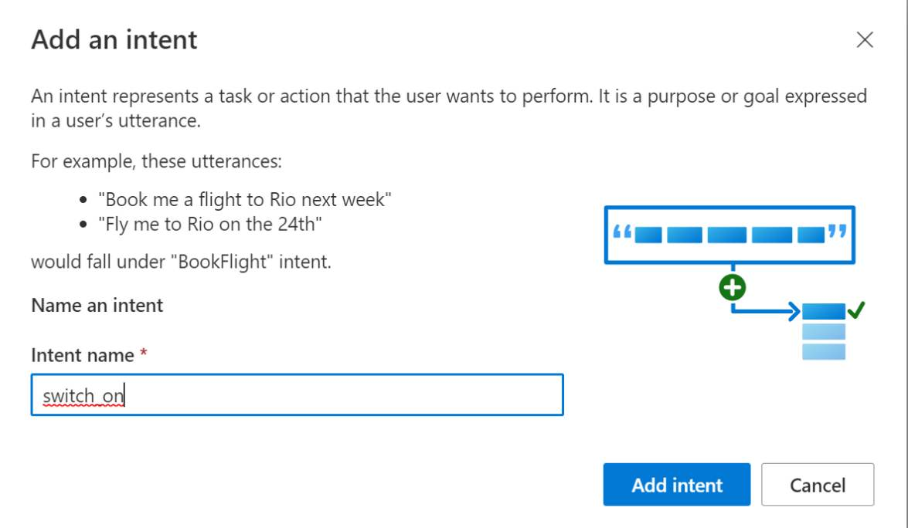
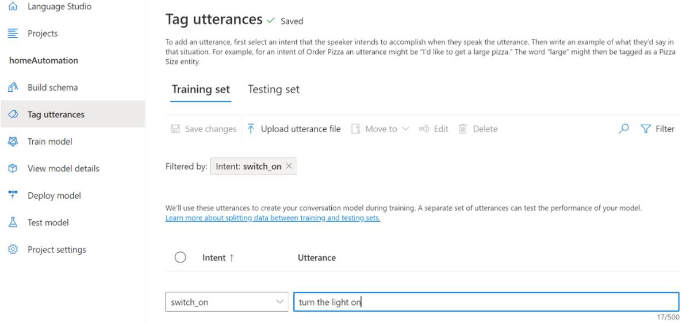
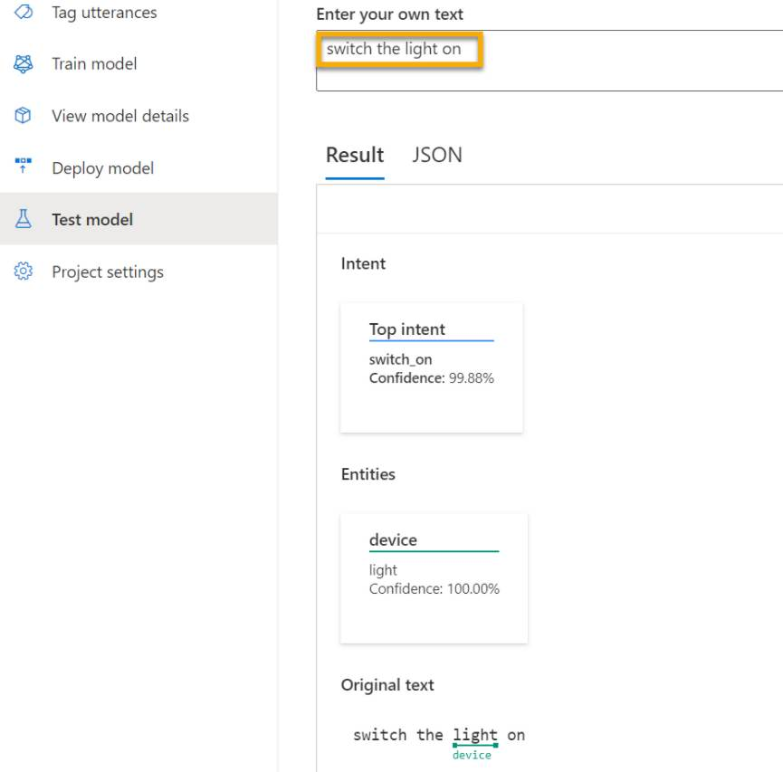
Speech Service
Speech Recognition and Synthesis
- Speech-to-Text API -> Recognition. trained by Microsoft, but you do have the option to custom train
- can be real time
- can be batch
- Text-to-Speech API -> Synthesis.
Translation
- Translator service supports only text-to-text translation.
- Uses Neural Machine Translation (NMT) model for translation.
- Supports more than 60 languages
- Need to mention from to using ISO 639-1 language codes
- You can also mention cultural variants for example en-US vs en-GB
If translation with Speech is involved, then this comes under the Speech Service. The translations can be
- Speech-to-Text translation
- Text-to-Speech translation
- Speech-to-Speech translation
Conversational AI›
- Using Language Service – older name QandA maker. Static questions and answers from a knowledge base for questions and answers.
Source can be a PDF, Word Document, or a web page, or entered manually.
Language Service is used for creating the knowledge base.
- Using Azure Bot Service – This service provides a framework for developing, publishing and managing bots on Azure. For client apps to access the knowledge base you need -
- The knowledge base ID
- The knowledge base endpoint
- The knowledge base authorization key
- Once knowledge base is ready you can create a custom bot by using Microsoft Bot Framework SDK or bys using automatic bot creation functionality. When your bot is ready to be delivered to users, you can connect it to multiple channels; making it possible for users to interact with it through web chat, email, Microsoft Teams, and other common communication media.
Other›
Decision Support (Anomaly Detector)
Knowledge Mining (Azure Cognitive Search)
Knowledge mining is the term used to describe solutions that involve extracting information from large volumes of often unstructured data.
Azure Cognitive Search is a search solution that has built in indexing options. An Indexer is utilized to convert data in all formats to a JSON based format for storage. Other AI services can be used for the above purpose i.e. Speech service to get text from audio file, OCR to get text from a form/note, etc.
Indexer (converts to JSONs) + uses other AI tools to store indexed data in an index
Before using Search service, the data must be extracted into an Azure data source. Options are –
- Azure SQL Database
- SQL Server on an Azure VM
- Cosmos DB
- Azure Blob storage
- Azure Table storage